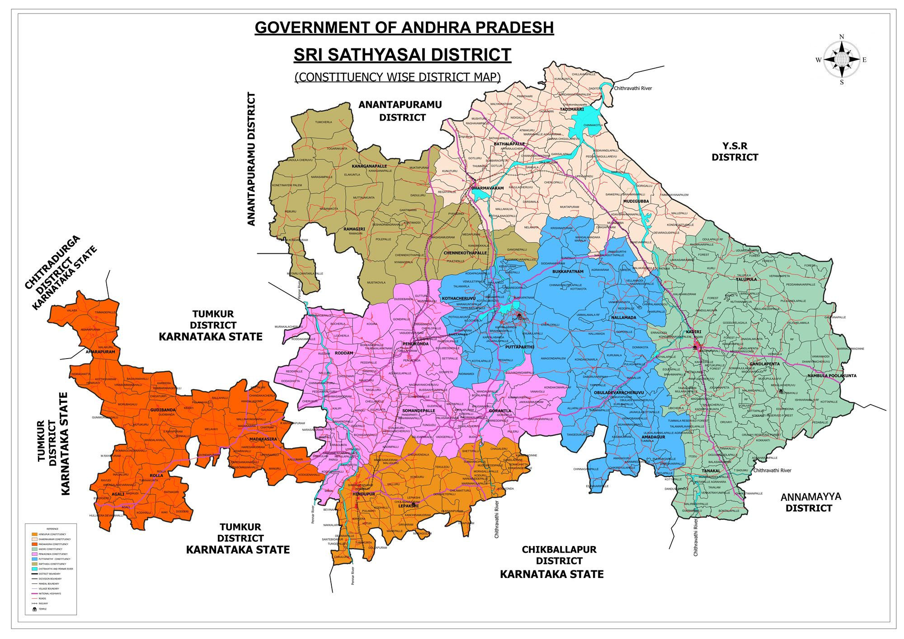

Demographics, Geography, Economy & Administrative Structure
Sri Sathya Sai district is located in the Rayalaseema region of Andhra Pradesh, India. Formed on 4 April 2022 from the Dharmavaram, Penukonda, Kadiri, Madakasira, and Puttaparthi revenue divisions, it is named after Bhagawan Sri Sathya Sai Baba, whose globally renowned institutions brought schools, a university, free super-speciality healthcare, and drinking water projects to the region.

The district lies in the Rayalaseema region, bounded by Anantapur district to the north, Annamayya and Kadapa districts to the east, and by Chitradurga, Tumakuru and Chikkaballapura districts of Karnataka to the west and south-west. The Pennar, Chitravathi, Jayamangala, Maddileru, and Papagni rivers flow through the district. Predominant soil types are red soils, with mineral reserves of gold, quartz, granite, and pyrophyllite.
Agriculture is centered around groundnut, silk rearing, and horticulture. The district has emerged as a major industrial hub anchored by:
Grouped across the 5 Revenue Divisions (Puttaparthi, Penukonda, Kadiri, Dharmavaram, Madakasira):
Featuring KIA Motors India (Penukonda Hub). Onboarding additional corporate partners for Sri Sathya Sai District.
Register Your Interest